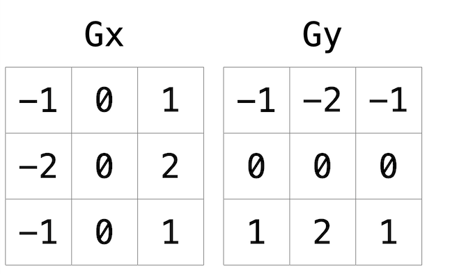

The first image filter is simply a matter of finding the RGB values for each pixel and averaging them, you can then either change the format of the bitmap image so each pixel value only contains a single greyscale value or for the purpose of education change all three values to the average value. For example a red pixel may have RGB values corresponding to 255, 0, 0. We could replace this with values of 85, 85, 85. We then repeat this process for all pixels
The second filter blurs the image. It does this by converting the RGB values of each pixel to the average of the surrounding pixels; red, green and blue values are averaged seperately. So although untrue at the edges, generally we can think of a pixel having four pixels immediately touching the edges and then 4 more pixels touching at the vertices forming a box or grid of 9 pixels. The RGB values for all of these pixels are summed with respect to R, G or B and divided by nine to give new values to the central pixel, this is repeated for all pixels.
Our final filter, perhaps the most useful in my opinion is the Sobel filter which is a type of edge detection. This filter is applied using a kind of mask called a kernel. Picture a grid, three rows by three colums, this will be our kernel. Now on the top edge the values are positive, maybe '1', through the middle they are zero and along the bottom they are negative, '-1'. Now lets centre this grid over an existing pixel, imagine all of the underlying pixels are the same colour. If we multiple our pixel values by the numbers masking them in our grid the top row will be equal in magnitude to the bottom row but opposite in sign. When we sum these values we will get a total of zero. You can imagine now what will happen should the pixels underneath the top row be different in colour to the bottom. The greater the difference the larger the magnitude of our sum, ignoring the sign. This is how our edge detection filter works, you apply the mask centering it over a pixel and then use the sum to give the central pixel a value. Our first kernel is good at detecting horizontal lines so we also perform the same process with a vertically oriented kernel, we square the sums, add them, square root them and cap them to 255. This keeps our magnitudes but neglects the signs of the sums.
However, what interests me is that using the code provide to us we have a method for altering the pixel values of an image and then saving the image. So what if we chose different values... well we could display anything to the level of resolution of the input image. To assign values to each pixel in order to draw is a little pointless, it would take all day and probably render a less than remarkable end product. Let's use a function, like in maths class such as y=a(x + b). Somewhat rudimentary as a function, it still manages to create a few problems. How do we determine the x and y values?
We actually use a kind of pixel index for moving through the pixels starting at 0 you move in one direction until you reach the edge and count the pixels, this can then serves as your height or width. You do the same again perpendicularly to get the other parameter. Now you can imagine each pixel having a vertical and horizontal pixel index value. From (0,0) to (height, width). So off I trot, I convert these to coordinates and use these in a rather well known function to calculate mandelbrot values. Alternative to potentially perplexing readers with the notion of imaginary numbers, we can think of the function actually consisting of a seperate function for x and y. That function involves an exponential term so given an input value greater than a certain magnitude the result becomes quite large but if small becomes smaller. The dual functions however encourage some variation from a single exponential function as if one value is high and the other is low it may give a more moderate result. To calculate mandelbrot values we actually perform this calculation not once but over and over again for a set of coordinates, a recursive formula. We want to know how quickly a co-ordinate input yields a very large number. Once the output goes beyond a magnitude of 2 it shan't return within this boundary so we stop, the number of repetitions is our mandelbrot value. We choose colour values to represent each value and these are our pixel values. It becomes interesting however because there is a boundary where coordinates touching each other behave differently. The boundary is not merely a line or a curve but an infinitely long and intricate perimeter, the more we zoom or increase the scale of our coordinates the more intricacy we will see on this boundary.